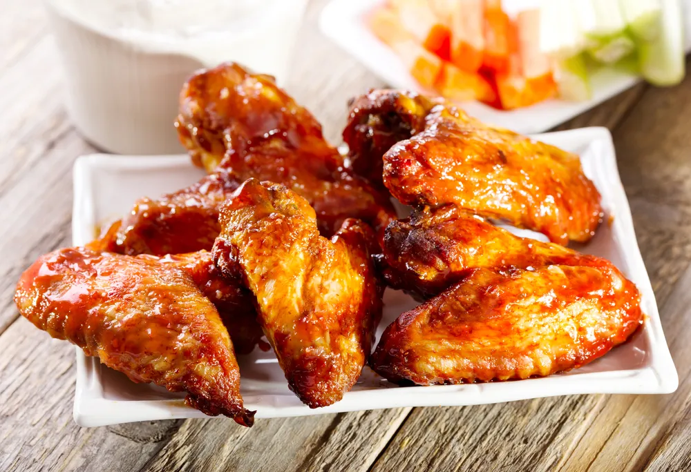

Baked Chicken Wings

Easy, crispy, and delicious. I normally serve with a side of rice, chicken gravy, and a vegetable or salad.
- Prep:10 mins
- Cook:1 hour
- Total:1 hr 10 mins
- Servings:2
- Yield:10 wings
Ingredients
- 3 tablespoon olive oil
- 3 cloves garlic, pressed
- 1/2 tablespoon and 1/2 teaspoon chili powder
- 1 teaspoons garlic powder
- salt and ground plack pepper to taste
- 10 chicken wings
Directions
- Preheat the over to 375 deegrees F (190 degrees C).
- Combine the olive oil, garlic, chili powder, garlic powder, salt, and pepper in a large, resealable bag; seal and shake
to combine. Add the chicken wings; reseal and shake to coat. Arrange the chicken wings on a baking sheet.
- Cook the wings in the preheated oven 1 hour, or until crisp and cooked through.